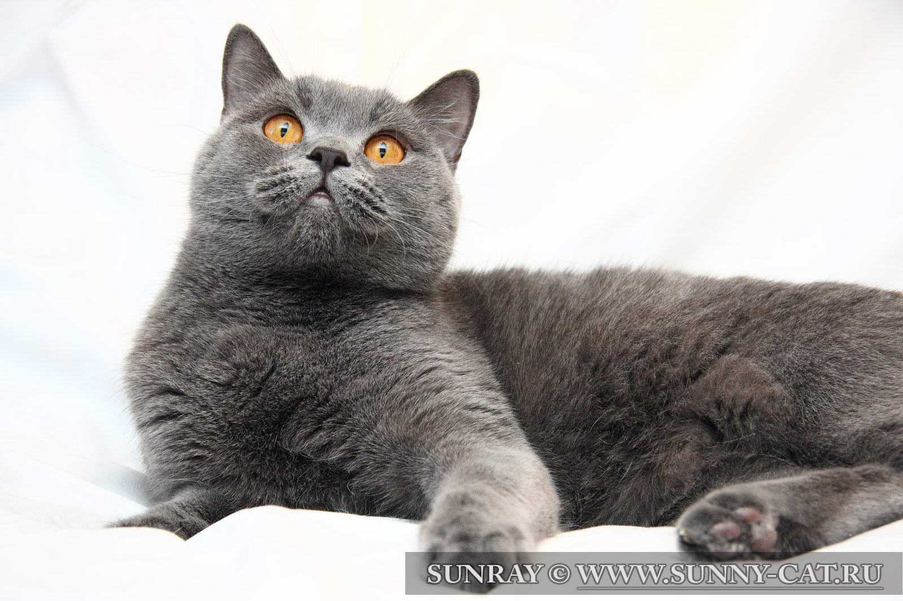
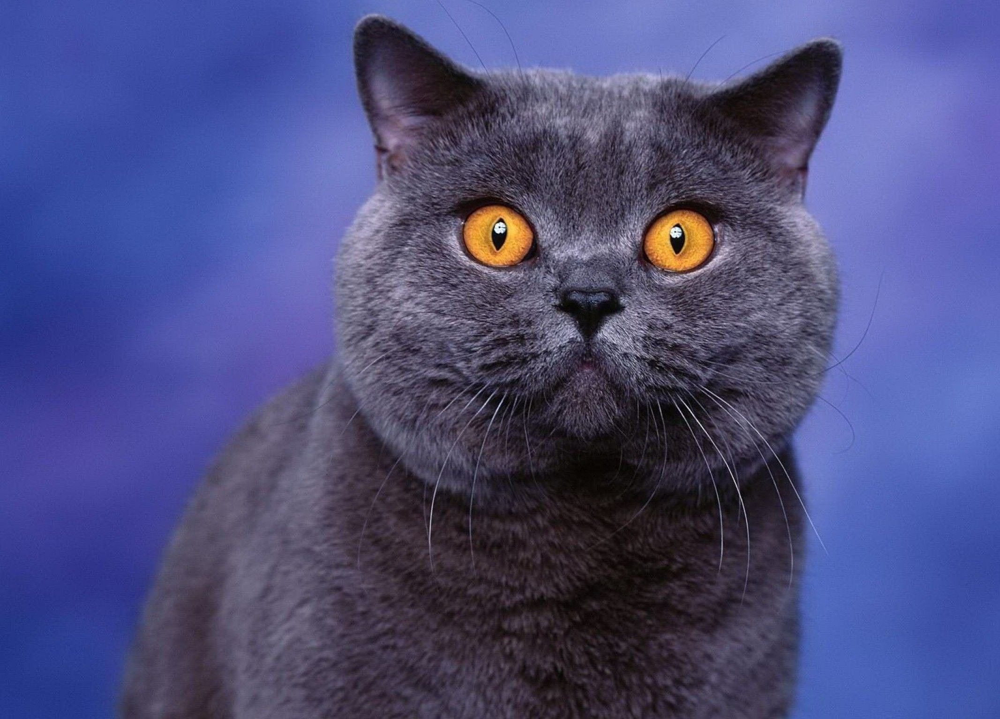

Британские короткошёрстные (рус. — британцы) — короткошёрстные кошки. Как правило, это сильные и крепкие кошки. Бывают от средних до крупных размеров. Согласно легенде, являются потомками Чеширского кота.
Шерсть у Британской кошки очень пушистая и мягкая, хоть и довольно короткая. Британским кошкам свойственно много различных окрасов, самые популярные — сплошные (серо-голубой, чёрный, лиловый, шоколадный), табби и серебристые табби, их разновидности: пятно, полоса и мрамор.
Глаз британского кота. Традиционный оранжевый цветГолова — круглая и с хорошо развитыми щеками, широкая в скулах, которые подчеркивают её круглую форму. Шея короткая, толстая. Нос — короткий, широкий, прямой. В профиль круглый лоб переходит в короткий, прямой нос (переход должен быть не очень явным, но заметным). Подбородок — сильный, ровный. Нос и подбородок составляют вертикаль.
Уши — маленькие, закруглённые, низко и широко посажены.
Глаза — большие, круглые, широко открытые, широко посаженные. Обычно очень яркого оранжевого цвета. Поинтовые коты имеют голубые глаза. Шиншиллы от голубого, лавандового, до изумрудно зелёного.
Тело — приземистое, кобби — типа, спина прямая, короткая. Грудь широкая. Плечи широкие, массивные
Ноги и лапы — ноги короткие, толстые, лапы — круглые, сильные, плотные.
Хвост — толстый, средней длины, закруглённый на конце, широкий в основании.
Шерсть — короткая, густая, блестящая, плотная, тонкой текстуры, не прилегающая, с густым подшерстком. Слишком мягкая шерсть и/или слишком длинная и/или плотно прилегающая — недостаток.
Породы «британская вислоухая» — не существует. Существует «британская короткошёрстная (длинношёрстная)» и «шотландская вислоухая (прямо-ухая)».
Плюсы: Не требует много внимания, может подолгу оставаться одна, отлично подойдет для людей, много времени проводящих на работе. Имеет хороший иммунитет.
Минусы: Имеет собственное мнение по многим поводам — необходимо воспитывать с раннего детства. Могут легко простудиться на сквозняке.
Длительность жизни: Представители данной породы являются долгожителями, обычно доживают до 20 лет.
